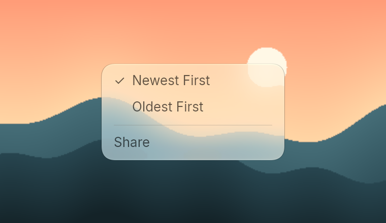
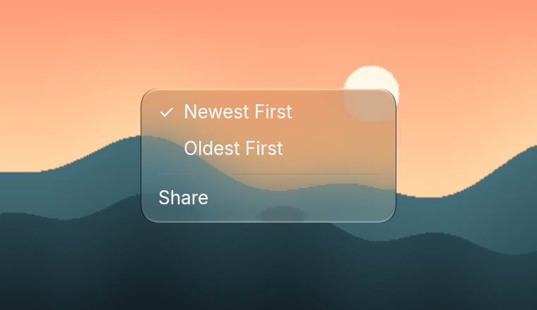
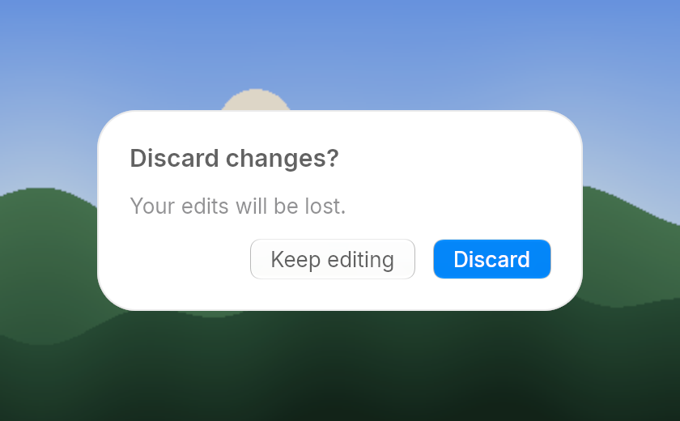
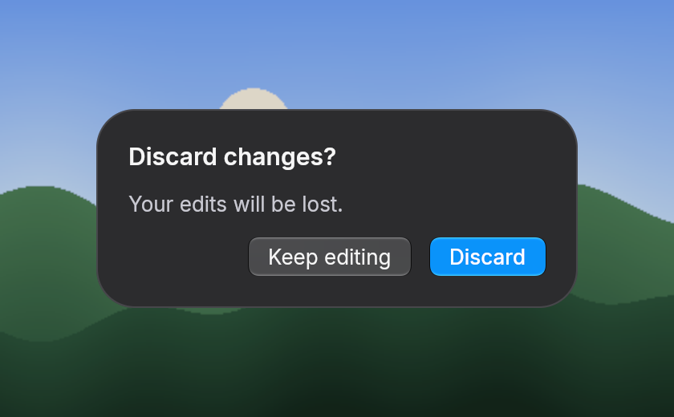

Menus and dialogs
Menus and dialogs are overlays: layers over the whole window that frost the finished frame beneath them. A menu over a toolbar shows the toolbar through its glass.
Menu
menu is a glass panel of rows. menu_item is a plain row, menu_check_item adds a check mark column so labels line up whether checked or not, and menu_separator draws a thin line between groups.


fn menu_example(_theme: &Theme) -> Element<Msg> {
menu()
.child(menu_check_item("Newest First", true, Msg::Pick(0)))
.child(menu_check_item("Oldest First", false, Msg::Pick(1)))
.child(menu_separator())
.child(menu_item("Share", Msg::Share))
}Showing a menu
Wrap it in popover(dismiss, content) and place it with absolute, top and left, for example just under the button that opens it. Clicking outside, or pressing Escape, sends dismiss, and your update should then stop showing it. With a menu item focused, Up and Down move to the neighbouring item.
For your own overlays, on_dismiss(message) does the same for any element: it sends message on Escape or on a press outside the element, and that press does nothing else. An overlay is never cut by a scrolling parent.
let mut window = div().child(content);
if self.menu_open {
let menu = menu()
.absolute()
.top(52.0)
.right(100.0)
.child(menu_item("Share", Msg::Share));
window = window.child(popover(Msg::MenuOpen(false), menu));
}
windowDialog
dialog(dismiss, content) dims the window and centers its content, usually a dialog_panel. Clicking the dimmed area or pressing Escape sends dismiss. The panel is solid, not glass, so the glass buttons on it have something to frost. Pressing the panel itself does not close the dialog.


fn dialog_example(theme: &Theme) -> Element<Msg> {
dialog(
Msg::Cancel,
dialog_panel(theme)
.child(text("Discard changes?").text_size(15.0).font_semibold())
.child(text("Your edits will be lost.").text_size(13.0).text_color(theme.secondary_label()))
.child(
row()
.gap_3()
.justify_end()
.child(button("Keep editing").on_press(Msg::Cancel))
.child(button("Discard").prominent().on_press(Msg::Save)),
),
)
}Your own overlays work the same way: Element::overlay marks any element as a layer over the window.